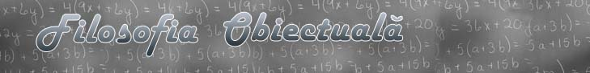

Acasă
Preambul
Cartea
Aplicaţii
Arhivă
Descărcare în
format pdf
.
Cuprins:
Introducere şi convenţii de limbaj
Index de acronime şi abrevieri
Cap.1 Organizarea sistemică
1.1 Ierarhizarea formelor cunoscute de existenţă ale materiei
1.2 Dependenţa de timp a limitelor cunoaşteriii
1.3 Principiul organizării sistemice
1.4 Unele implicaţii filosofice ale acceptarii POS
1.5 Vidul în viziunea sistemică
Cap.2 Distribuţii
2.1 Introducere
2.2 Distribuţii virtuale
2.3 Distribuţii realizabile
2.4 Distribuţii discrete
2.5 Distribuţii haotice
2.6 Distribuţii cu suport multiplu
2.7 Concluzii
Cap.3 Obiecte
3.1 Modelul general de obiect
3.2 Obiecte elementare
3.3 Organizarea ierarhică a obiectelor
3.4 Obiecte compuse
3.5 Obiecte referinţă
3.6 Concluzii
Cap.4 Procese
4.1 Câteva tipuri de procese
4.2 Procese elementare specifice
4.3 Clase procesuale de obiecte
4.4 Vectori
4.5 Procese elementare specifice concatenate
4.6 Procese elementare specifice cu suport spaţial
4.7 Procese periodice
4.8 Procesele de mişcare
4.9 Concluzii
Cap.5 Fluxuri
5.1 Introducere
5.2 Definiţie şi modele ale fluxului
5.2.1 Modelul virtual de flux
5.2.2 Modelul sistemic (obiectual) de flux
5.3 Tipuri de fluxuri
5.4 Stocarea
5.5 Concluzii
Cap.6 Medii
6.1 Introducere
6.2 Câteva criterii generale de clasificare a sistemelor materiale
6.3 Sisteme centralizate şi sisteme distribuit
6.4 Tipuri de sisteme distribuite
6.5 Procesul de propagare
6.6 Concluzii
Cap.7 Sisteme materiale
7.1 Modelul fluxurilor
7.1.1 Sisteme statale
7.1.2 Biosisteme individuale
7.1.3 Modelul comun al sistemelor formate din biosisteme
7.2 Modelul general de sistem material
7.2.1 Suprafeţe de separaţie
7.2.2 Modelul triadei de fluxuri
7.2.3 Suprafeţe reale de separaţie
7.2.4 Transferul fluxurilor prin SRS
7.2.5 Tipuri de SRS
7.3 Acţiune şi interacţiune
7.4 Interacţiunea sistemelor materiale
7.5 Inerţia
7.6 Energia
7.6.1 Deducerea definiţiei energiei
7.6.2 Tipuri de energie
7.6.3 Asocierea dintre tipul de flux şi forma de energie conţinută
7.6.4 Atributul existenţial al energiei
7.6.5 Compunerea fluxurilor energetice
7.6.6 Acţiunea energetică
7.7 Clasele fundamentale de fluxuri interne
7.8 Legile formării sistemelor materiale naturale
7.9 Concluzii
Cap.8 Sisteme de prelucrare a informaţiei
8.1 Importanţa prelucrării informaţiei
8.2 Obiectele reale şi proprietăţile lor
8.3 Principiul existenţei sistemelor materiale
8.4 Sisteme naturale de prelucrare a informaţiei
8.5 Sisteme artificiale de prelucrare a informaţie
8.6 Modelul general de SPI
8.7 Sisteme suport de informaţi
8.8 Asocierea de valori semantice valorilor sintactice ale SSI interne
8.9 Prelucrarea informaţiei
9.0 Concluzii
Cap.9 Sisteme abstracte
9.1 Obiecte reale
9.2 Obiecte abstracte
9.2.1 Obiect abstract
9.2.2 Obiecte abstracte concrete
9.2.3 Clase de obiecte abstract
9.2.4 Nivel de abstractizare
9.3 Limbaj extern
9.3.1 Nume
9.3.2 Limbaj şi comunicare
9.3.3 Cuantumul informaţiei comunicate
9.4 Sistem
9.4.1 Definitii curente
9.4.2 Analiza obiectuala a definitiilor
9.4.3 Definitia generala a sistemului
9.4.4 Interdependenta atributelor
9.4.5 Informatia asociata elementelor de sistem
9.5 Obiecte abstracte virtuale
9.6 Nedeterminare si informatie
9.7 Concluzii
Anexa X.1 -
ORDIN DE MARIME
Anexa X.2 - EXEMPLE DE DISTRIBUTII SISTEMICE
X.2.1 Distributii cu suport numere întregi
X.2.2 Distributia statelor pe suprafata Terrei
Anexa X.3 - MODURI SPECIFICE DE ABORDARE A UNOR OBIECTE MATEMATICE îN FILOSOFIA OBIECTUALA
X.3.1 Multimea numerelor reale
X.3.1.1 Analiza informationala a multimii {R}
X.3.1.2 Analiza obiectuala a multimii {R}
X.3.1.3 Concluzii
X.3.2 Distributii
X.3.2.1 Definirea obiectuala a distributiilor
X.3.2.2 Derivata clasica a unei functii continue
X.3.2.2.1 Familii de obiecte abstracte si asimptotele lor
X.3.2.3 Derivata în sens obiectual
X.3.2.4 Concluzii
X.3.3 Flux
X.3.4 Pozitia unui element de curba, suprafata sau volum
X.3.5 Vectori
X.3.6 Puncte dimensionale
X.3.6.1 Modelul punctului cu dimensiuni
X.3.6.2 Concluzii
X.3.7 Elementaritate
X.3.8 Elemente si cuante
X.3.9 Multimi
Anexa X.4 -
CONTAINERE
Anexa X.5 - PRINCIPIUL NECONTRADICTIEI
X.5.1 Complementaritate
X.5.2 Dihotomie
X.5.3 Principiul necontradictiei
X.5.4 Complementaritatea în distributiile naturale
X.5.5 Concluzii
Anexa X.6 -
CLASE PROCESUALE DE OBIECTE
Anexa X.7 –
FLUXURI ABSOLUTE SI RELATIVE
Anexa X.8 -
MARIMI VECTORIALE LOCALE SI GLOBALE
Anexa X.9 -
SCALARIZAREA MARIMILOR VECTORIALE
Anexa X.10 -
ATRIBUTE TRANSMISIBILE SI TRANZACTII
Anexa X.11 - BIOSISTEME
X.11.1 Modelul obiectului biosistem
X.11.2 Celula - biosistem elementar
X.11.3 Lantul structural al biosistemelor
Anexa X.12 - STARI INTERNE SI EXTERNE, LOCALE SI GLOBALE
Anexa X.13 - SUPORT ABSTRACT SI SUPORT MATERIAL
Anexa X.14 - PERCEPTIA OBIECTELOR DE CATRE SPI
Anexa X.15 – COMPONENTE LOCALE ALE FLUXURILOR
X.15.1 Vectorul densitate de flux (VDF)
X.15.2 Componentele locale ale VDF
Anexa X.16 –
DURATA DE VIATA A SISTEMELOR MATERIALE
Anexa X.17 –
ANALIZA OBIECTUALA A CâMPURILOR VECTORIALE
Anexa X.18 – DISTRIBUTII SENZORIALE
X.18.1 Distributiile celulare senzoriale ca obiecte
X.18.2 Stari senzoriale externe si interne
X.18.3 Tipuri de distributii celulare senzoriale
X.18.4 Distributii senzoriale
X.18.5 Diferentierea calitativa si cantitativa a atributelor senzoriale
Anexa X.19 –
CAUZALITATE OBIECTUALA SI PROCESUALA
Anexa X.20 –
REFERINTE INTERNE NATURALE
Anexa X.21 –
DEFORMAREA MEDIILOR NATURALE
Anexa X.22 – ENERGIA POTENTIALA
X.22.1 Interactiuni între SM cu energie potentiala
X.22.2 Abordarea specifica filosofiei obiectuale a interactiunilor prin câmpuri energetice potentiale
Anexa X.23 - CLASE DE VARIABILE
X.23.1 Clase de variabile
X.23.2 Multimile suport ale claselor de variabile
Anexa X.24 - FOTONII TERMICI SI ENERGIA TERMICA
X.24.1 Orbitali ai PE
X.24.2 Tranzitii între doi orbitali energetici ai unei aceeasi PE
X.24.3 Fotonul atomic
X.24.4 Perturbarea fotonica a starilor PE legate
X.24.5 Perturbarea mecanica a starilor PE legate
X.24.6 Fotonii termici si energia termica
X.24.7 Echilibrul dintre fluxul termic si cel baric
X.24.8 Distributiile energetice interne ale MN
X.24.8.1 Distributia Plank
X.24.8.2 Distributia Maxwell
X.24.9 Temperatura
X.24.9.1 Definitia obiectuala a temperaturii
X.24.10 Concluzii
CUVINTE SI EXPRESII REZERVATE
Copyright © Aurel Rusu. All rights reserved.